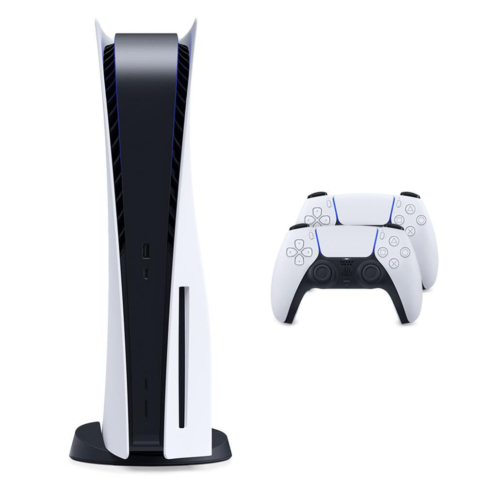
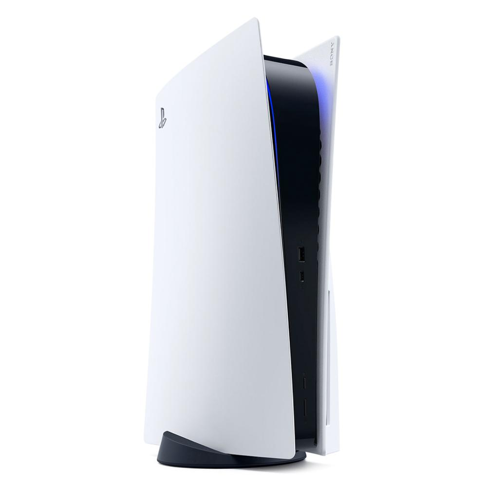
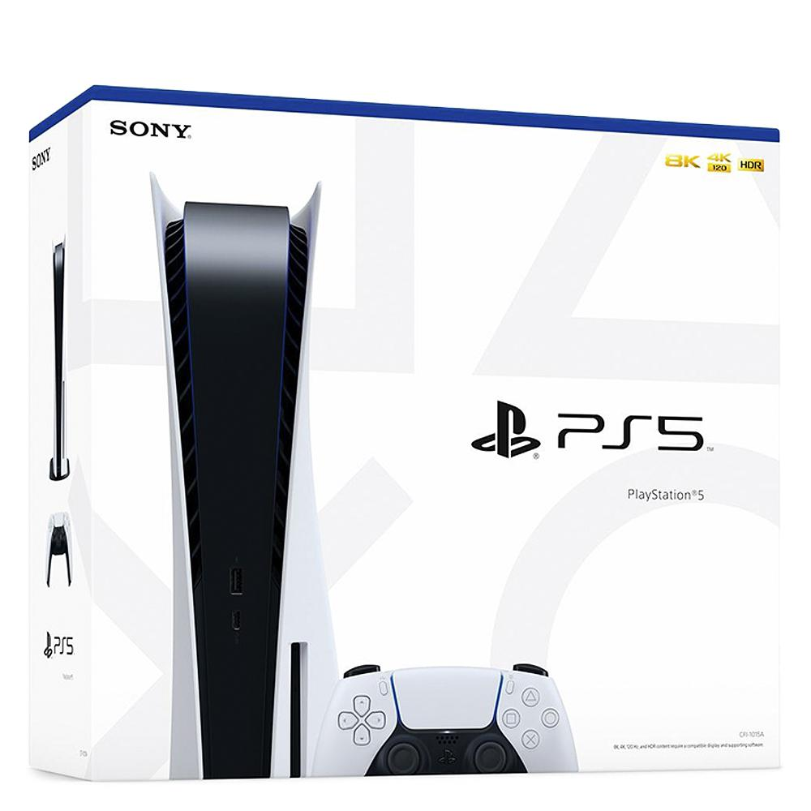

  
Console Playstation 5, 825GB - PS5.
R$ 6.068,90
Comprar
10% OFF no pagamento via PIX ou 1x no cartão
R$ 6.068,90 em até 12x de R$ 505,74 sem juros no cartão de crédito.
Descrição do produto:
CONSOLE SONY PLAYSTATION 5 825GB COM DRIVE
Jogar Não Tem Limites. O slogan do novo PlayStation 5 diz tudo sobre o console.
SSD ultrarrápido:
- Maximize suas sessões de jogo com tempo de carregamento praticamente instantâneo para jogos do PS5.
E/S integrada:
- A integração personalizada dos sistemas de console PS5, permite que os criadores extraiam dados do SSD tão rápido que eles podem desenvolver jogos de formas que antes seriam impossíveis.
"Ray Tracing" - (Rastreamento de raios):
- Mergulhe em mundos com um nível inédito de realismo enquanto os raios de luz são simulados individualmente, criando sombras e reflexos realistas em jogos compatíveis com PS5.
Jogos para TVs 4K:
- Curta seus jogos favoritos do PS5 na sua incrível TV 4K.
Até 120 qps com saída em 120 Hz:
- Desfrute da fluidez e taxa de quadros de até 120 qps em jogos compatíveis, com suporte a saída de 120 Hz em telas 4K.
Tecnologia HDR:
- Com uma TV HDR, os jogos compatíveis do PS5, exibem uma variedade de cores inacreditavelmente vibrantes e realistas.
Saída em 8K:
- Os consoles PS5 oferecem suporte à saída 8K, para que você possa jogar na sua tela com resolução de 4320p.
Tempest 3D AudioTech:
- Mergulhe em palcos sonoros que farão você acreditar que os sons estão vindo de todas as direções. Seja com seus fones de ouvido ou os alto-falantes de sua TV, seu ambiente ganhará vida com o Tempest 3D AudioTech em jogos compatíveis.
Resposta tátil:
- Experimente a resposta tátil com o controle sem fio DualSense em jogos selecionados do PS5 e sinta o impacto de suas ações no jogo através da resposta sensorial dinâmica.
Gatilhos adaptáveis:
- Assuma o controle com os imersivos gatilhos adaptáveis, agora com níveis dinâmicos de resistência que simulam o impacto físico das atividades em jogos selecionados do PS5.
Compre o seu Playstation 5 aqui no KaBuM!
Informações tecnicas
Características:
- Marca: Sony
- Modelo: PlayStation 5
Especificações:
CONSOLE PS5
Tipo:
- Mídia Física
CPU:
- x86-64-AMD Ryzen “Zen 2”
- 8 Cores / 16 Threads
- Frequência variável, até 3.5 GHz
GPU:
- Mecanismo de gráficos baseado em AMD Radeon RDNA 2
- Aceleração Ray Tracing
- Frequência variável, até 2.23 GHz (10.3 TFLOPS)
Memória:
- Tipo: GDDR6
- Capacidade: 16GB
- Largura de banda de 448 GB/s
Armazenamento:
- Tipo: SSD
- Capacidade: 825GB
- Largura de banda de leitura de 5.5GB/s (Raw)
Disco dos Jogos:
- Tipo: Ultra HD Blu-ray
- Até 100GB / disco
Saída de Vídeo:
- Suporte a TVs de 120Hz 4K, TVs 8K, VRR (especificado pelo HDMI versão2.1)
Áudio:
- “Tempest” 3D AudioTech
Recurso:
- Compatível com VR (PSVR)
Físico:
- Cor: Branco
- Dimensões: 390 x 104 x 260 mm
Tensão de Alimentação:
- Voltagem: 100-240V 1.65-0.75A 50/60Hz 350W
Entrada / Saída:
- 1x USB Type-A port (Hi-Speed USB)
- 2x USB Type-A port (Super-Speed USB 10Gbps)
- 1x USB Type-C port (Super-Speed USB 10Gbps)
Rede:
- Ethernet (10BASE-T, 100BASE-TX, 1000BASE-T)
- IEEE 802.11 a/b/g/n/ac/ax
- Bluetooth 5.1
Temperatura de Operação:
- 5º C a 35º C
CONTROLE SEM FIO DUALSENSE
Físico:
- Cor: Branco
- Dimensões: 160 x 66 x 106 mm
Botões:
- Botão PS
- Botão Criar
- Botão Options
- Botões direcionais (Cima/Baixo/Esquerda/Direita)
- Botões de Ação (Triângulo, Círculo, Cruz, Quadrado)
- Botões R1/L1, Botões R2/L2 (com efeitos de gatilho)
- Controle esquerdo / botão L3
- Controle direito / botão R3
- Botão do Touch Pad
- Botão MUTE
Touch Pad:
- 2 Point Touch Pad
- Capacitive Type
- Click Mechanism
Sensor de Movimento:
- Sistema sensor de movimento com 6 eixos (giroscópio de 3 eixos + acelerômetro de 3 eixos)
Bateria:
- Tipo: Bateria de íon-lítio recarregável embutida
- Voltagem: DC 3.65V
- Capacidade: 1560mAh
Comunicação:
- Sem Fio: Bluetooth Ver5.1
- Com Fio: USB connection (HID, Audio)
Resposta:
- Efeitos de gatilho (nos botões R2/L2)
- Vibração (resposta tátil com atuador duplo)
- Indicadores (indicador de luz / indicador de jogador / indicador do MUTE)
Áudio:
- Microfone embutido
- Alto-Falante Mono integrado, entrada para Headset Stereo
- Output: 48kHz/16bit, Input : 24kHz/16bit
CONTEÚDO DA EMBALAGEM:
- Console PlayStation 5 com SSD de 825GB
- Controle sem fio DualSense
- Base
- Cabo HDMI
- Cabo de energia AC
- Cabo USB
- Materiais impressos (Idioma Português)
- ASTRO’s PLAYROOM (Jogo pré-instalado)*
*O console pode precisar ser atualizado para a versão mais recente do software do sistema. Necessário conexão com a Internet.
Garantia do Fornecedor
12 Meses
Garantia:
Sem Garantia
Peso:
4390 gramas (bruto com embalagem)